step2：memopad.exe の作成
step1 で確定した仕分けに沿って、C#／WPF で memopad.exe を実装し、インストーラまで作る。着手日：2026-09-06
目次
1. 技術選定（WPF を選んだ理由）
| 候補 | 評価 |
|---|---|
| WPF（採用） | フォント・色・ズームをプロパティで直接扱える。タブや検索バーなどのレイアウトを XAML で組みやすい。.NET 9 の Fluent テーマを使うとライト／ダーク テーマがメニューやダイアログまで自動で切り替わる |
| Windows Forms | 背景色と文字色を変えるだけなら最短。ただし TextBox のズームやタブ付きの画面をきれいに作るのに手間がかかり、ダーク テーマは自前で描くことになる |
| WinUI 3 | 本家メモ帳と同じ基盤で見た目は最も近い。反面、配布に Windows App SDK ランタイムが要り、ツールチェーンも重い |
| 項目 | 内容 |
|---|---|
| 言語／フレームワーク | C# 13、.NET 9、WPF（net9.0-windows） |
| テーマ | .NET 9 WPF の Fluent テーマ（Application.ThemeMode）。ライト／ダーク／システム設定 |
| カラーピッカー | Windows 標準の「色の設定」ダイアログ（Windows Forms の ColorDialog）を WPF から呼ぶ |
| ANSI の読み書き | NuGet の System.Text.Encoding.CodePages で Shift_JIS（cp932）を有効化 |
| 設定の保存先 | %APPDATA%\memopad\settings.json |
| インストーラ | Inno Setup 6。.NET ランタイム同梱（self-contained）で配布 |
| 開発環境 | Visual Studio 2022 が無い端末でも dotnet CLI だけでビルドできる構成にした（memopad.sln があるので Visual Studio でも開ける） |
2. プロジェクト構成
memopad.sln
src/memopad/
App.xaml(.cs) 起動処理：設定の読み込み、テーマ適用、引数のファイルを開く
MainWindow.xaml(.cs) メニュー、タブ ストリップ、検索／置換バー、ステータスバー
Commands.cs メニューとショートカットの定義（キー割り当てはメモ帳に合わせる）
Models/Document.cs タブ 1 つ分の文書（パス、エンコード、改行コード、変更フラグ）
Views/EditorView.xaml 本文の TextBox。タブごとに持つので元に戻す履歴もタブ単位
Views/DocumentTab.cs Document と EditorView の組
Dialogs/ 保存確認、行に移動、フォント、ページ設定、色の設定、バージョン情報
Services/TextFileService.cs エンコード判定と改行コードの正規化
Services/AppSettings.cs 設定（JSON で保存）
Services/ThemeService.cs テーマの適用と既定色
Services/PrintService.cs 印刷（ヘッダー／フッター付き）
Services/ColorUtil.cs 標準 16 色の定義と色の文字列変換
memopad.ico アプリ アイコン（docs/tools/make-icon.ps1 で生成）
installer/
memopad.iss Inno Setup の定義
build-installer.ps1 発行＋インストーラ作成
docs/tools/
capture-memopad.ps1 動作確認を兼ねたスクリーンショット自動撮影
タブの作り：WPF の TabControl はタブを切り替えると中身を作り直すため、元に戻す履歴やカーソル位置が失われる。そこでタブの見出しは横並びの ListBox で作り、本文は
DocumentTab が持つ EditorView（TextBox）をそのまま差し替える方式にした。タブごとに TextBox が生きているので、履歴も選択範囲もタブ単位で残る。
3. 画面と機能
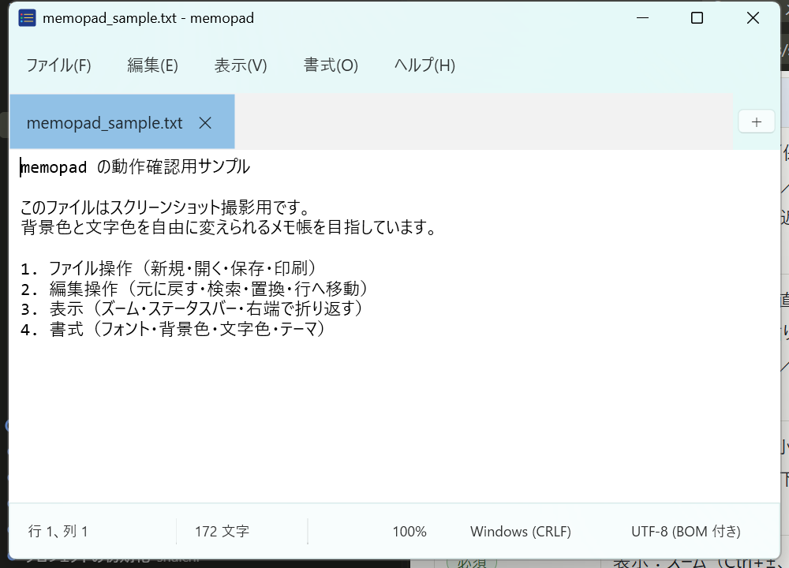
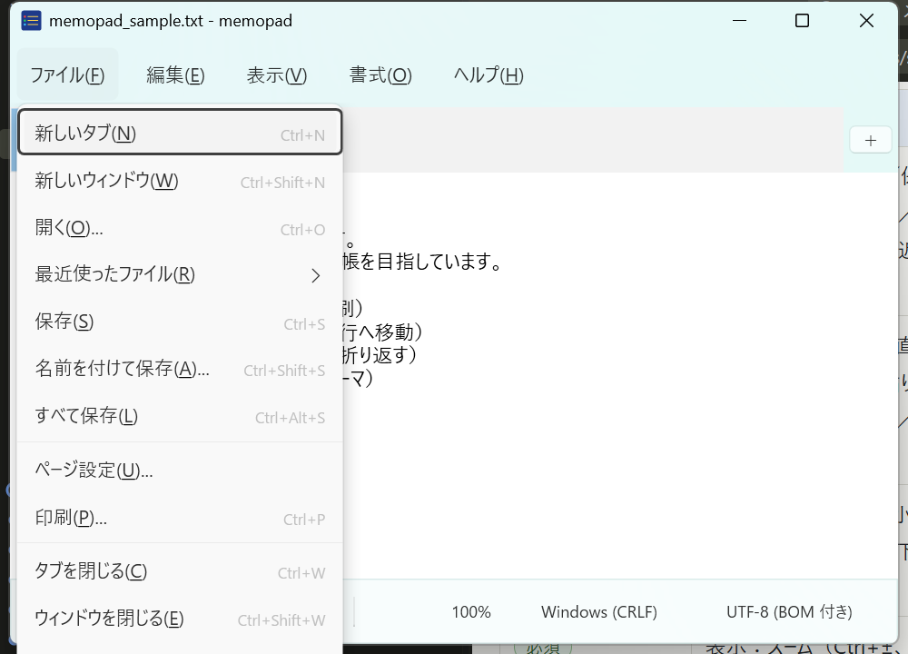
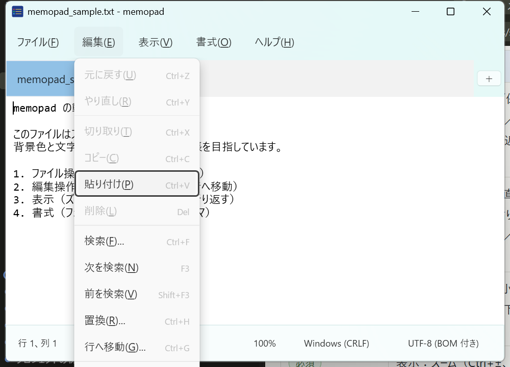
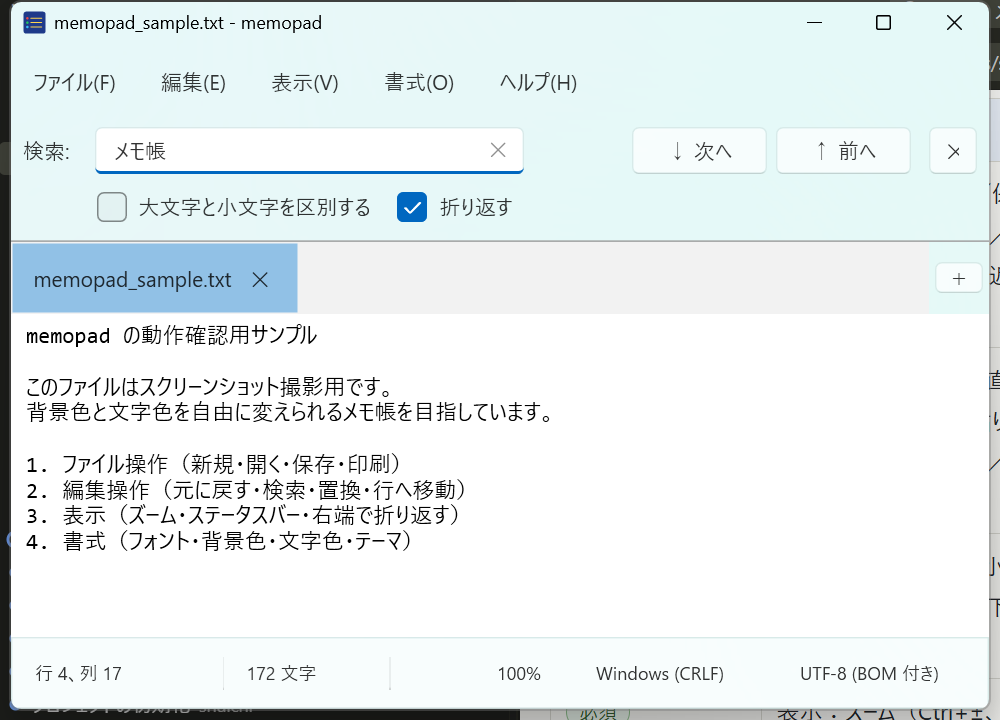
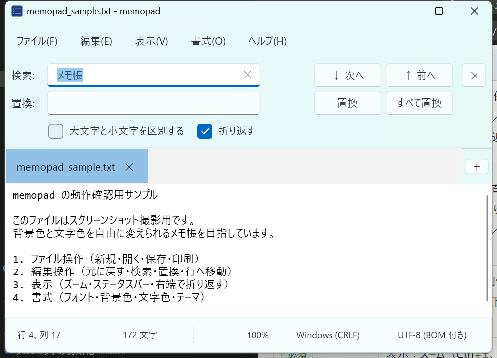
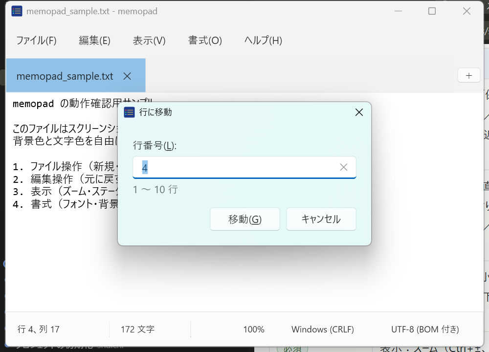
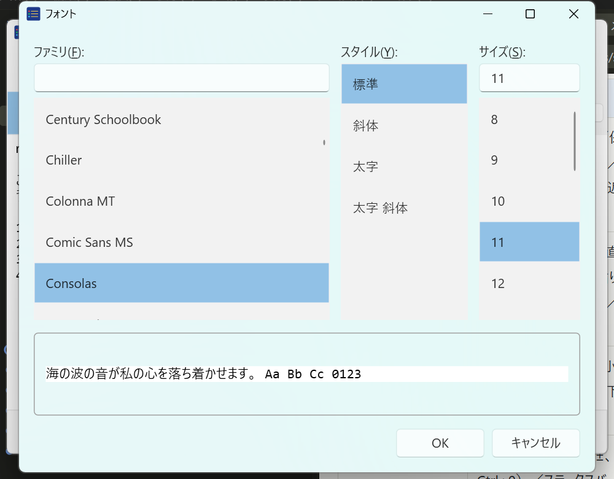
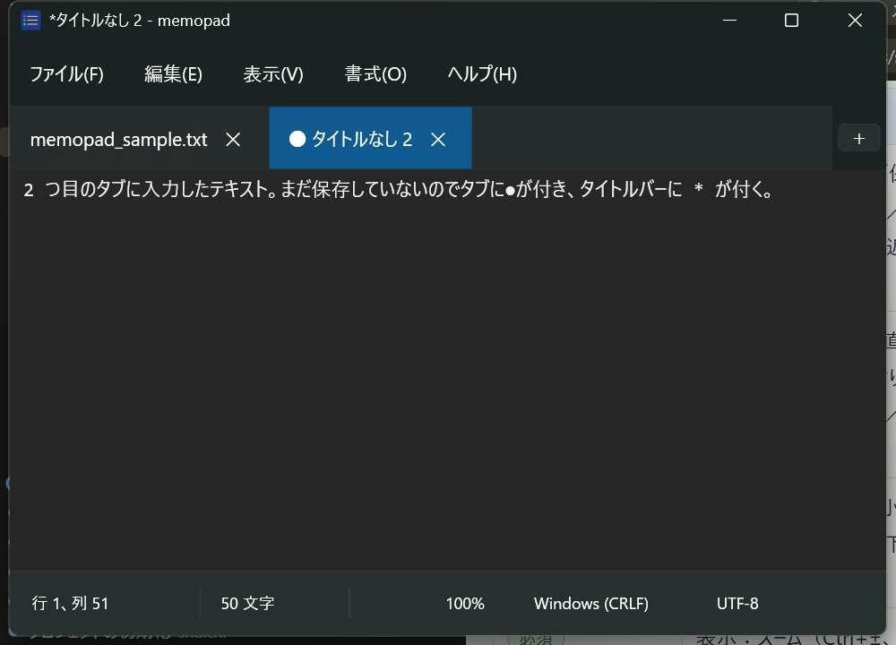
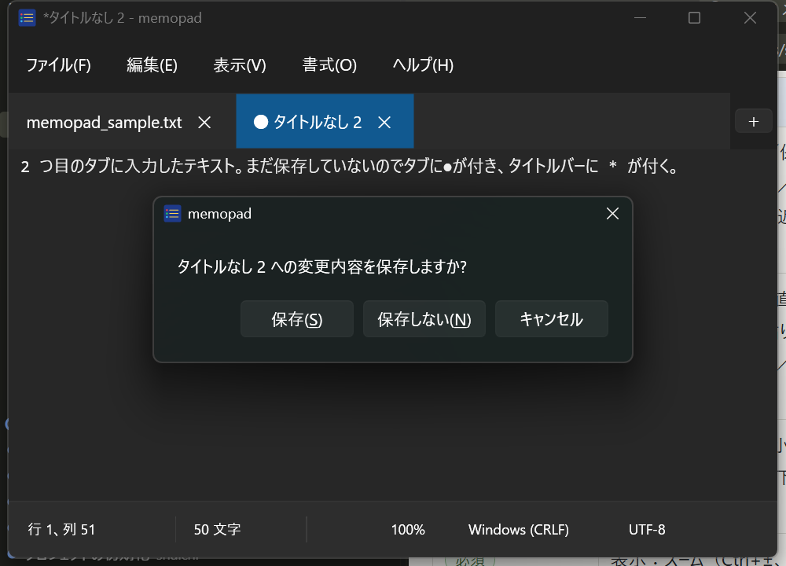
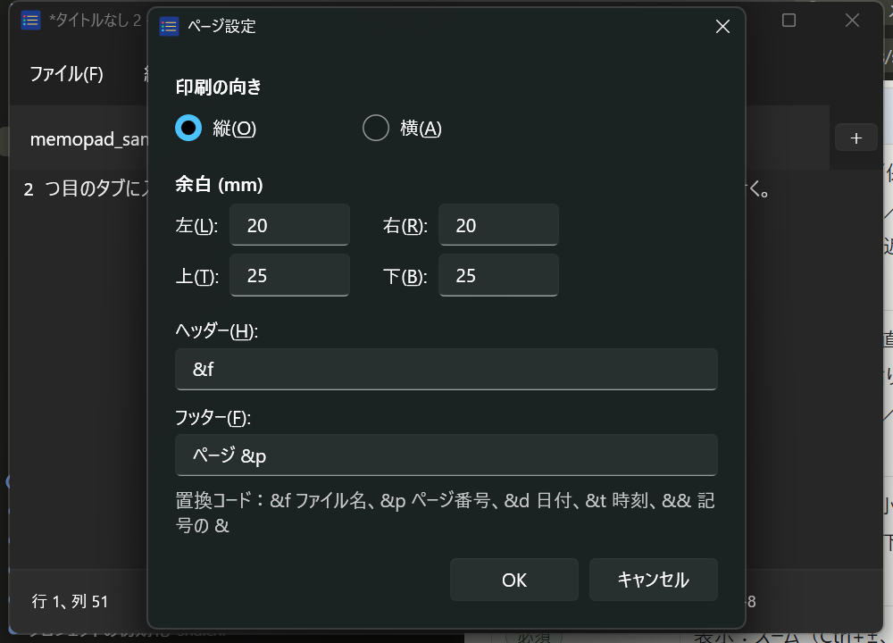
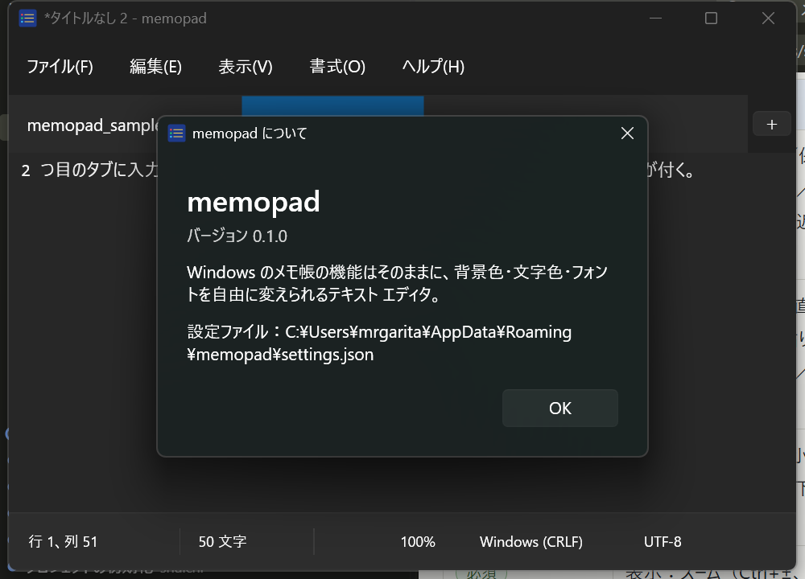
| 分類 | 実装した機能 |
|---|---|
| ファイル | 新しいタブ、新しいウィンドウ、開く（複数選択可）、最近使ったファイル（10 件）、保存、名前を付けて保存、すべて保存、ページ設定、印刷、タブを閉じる、ウィンドウを閉じる、終了。ドラッグ＆ドロップでも開ける |
| 編集 | 元に戻す、やり直し、切り取り、コピー、貼り付け、削除、検索、次を検索、前を検索、置換、行へ移動、すべて選択、日付と時刻（F5） |
| 表示 | ズーム（Ctrl+±、Ctrl+0、Ctrl+ホイール。10〜500%）、ステータスバー、右端で折り返す |
| 書式（追加） | フォント、背景色、文字色、既定の色に戻す、テーマ（ライト／ダーク／システム） |
| ステータスバー | 行・列、文字数（改行 1 つ＝1 文字、本家と同じ数え方）、ズーム、改行コード、エンコード。改行コードとエンコードはクリックで切り替えられる |
| タブ | 複数ファイル、未保存●印、Ctrl+Tab／Ctrl+Shift+Tab、中クリックで閉じる、最後のタブを閉じるとウィンドウを閉じる |
4. 背景色・文字色（本題の追加機能）
書式メニューの「背景色」「文字色」に標準 16 色を色見本付きで並べ、その下に「その他の色...」を置いた。16 色は Windows の基本 16 色（黒・茶・緑・オリーブ・紺・紫・青緑・銀・灰・赤・黄緑・黄・青・赤紫・水色・白）。
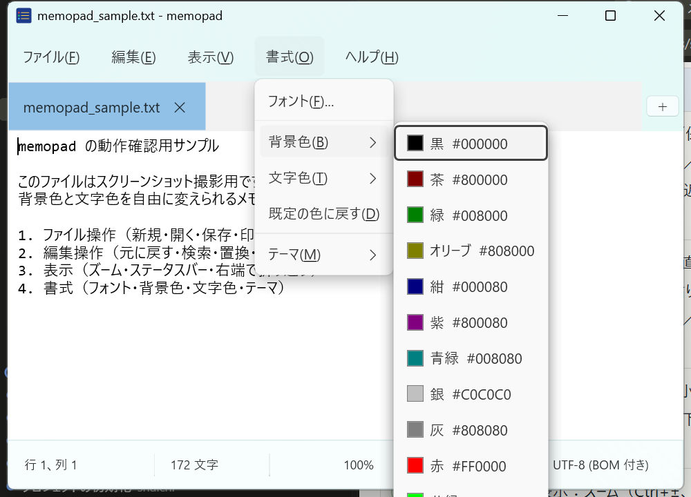
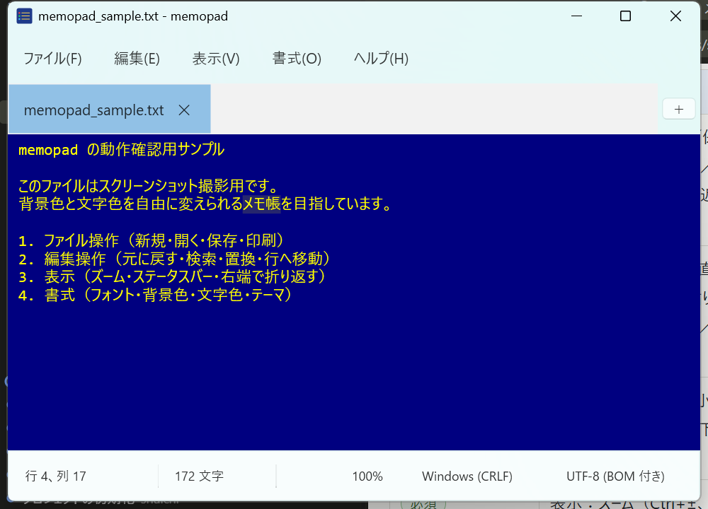

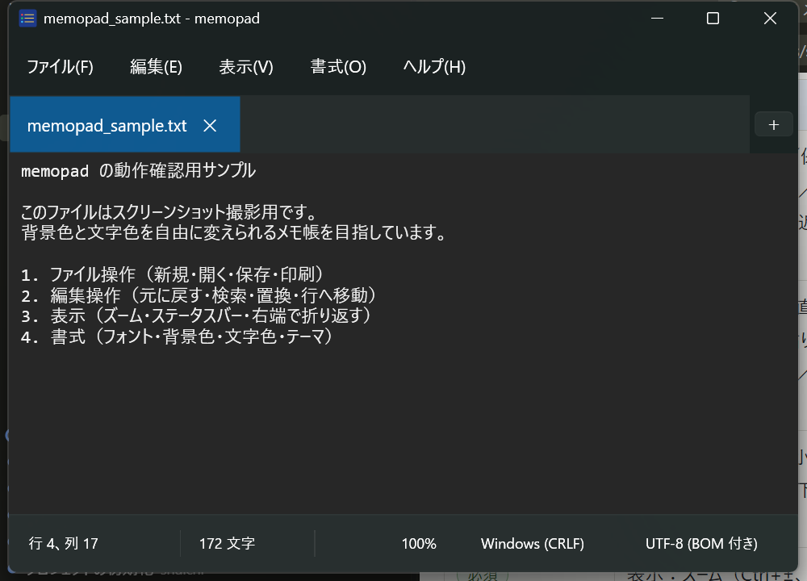
実装のポイント：Fluent テーマの TextBox はフォーカス時に背景色を上書きする作りなので、本文の TextBox だけはテンプレートを素の Border＋ScrollViewer に差し替えた（
Views/EditorView.xaml）。これでユーザーが選んだ背景色・文字色がどの状態でも崩れない。キャレットの色は文字色に合わせ、選択範囲は文字色の半透明にして、どんな配色でも見えるようにしている。
5. ファイルの読み書き（エンコードと改行コード）
| 処理 | やり方 |
|---|---|
| エンコードの判定 | BOM があれば UTF-8 (BOM 付き)／UTF-16 LE／UTF-16 BE。無ければ UTF-8 として厳密にデコードしてみて、失敗したら ANSI（Shift_JIS）とみなす |
| 改行コードの判定 | 最初に現れる改行を見る（CRLF／LF／CR）。改行が無ければ CRLF |
| 内部表現 | 読み込み時に改行を CRLF に揃えて TextBox に入れる。保存時に元の改行コードへ戻す。そのため LF のファイルを開いて編集しても LF のまま保存される |
| 保存時のエンコード選択 | WPF の共通ダイアログには本家のような「エンコード」欄を足せないので、「ファイルの種類」の一覧に UTF-8／UTF-8 (BOM 付き)／ANSI／UTF-16 LE／UTF-16 BE を並べて選ばせる。ステータスバーのエンコード表示をクリックしても切り替えられる |
| 同じファイルを 2 度開く | 既に開いているタブへ移動する（本家と同じ） |
| 空の「タイトルなし」があるとき | ファイルを開くとそのタブを使い回す（本家と同じ） |
6. ビルドと実行
# ビルド（Debug）
dotnet build src\memopad\memopad.csproj
# 実行
src\memopad\bin\Debug\net9.0-windows\memopad.exe [開くファイル...]
# スクリーンショットの再生成（動作確認を兼ねる。実行中はマウス／キーボードに触らない）
.\docs\tools\capture-memopad.ps1必要なのは .NET 9 SDK だけ。Visual Studio 2022 で開く場合は memopad.sln を使う。
7. インストーラ（Inno Setup）
# Inno Setup 6 の導入（初回のみ）
winget install JRSoftware.InnoSetup
# 発行（.NET ランタイム同梱）→ インストーラ作成
.\installer\build-installer.ps1
# → installer\output\memopad-setup-<version>.exe| 項目 | 内容 |
|---|---|
| 配布形式 | self-contained（win-x64）。インストール先の PC に .NET を入れる必要が無い |
| インストール先 | 既定はユーザー単位（管理者権限不要）。ダイアログで全ユーザー向けも選べる |
| スタート メニュー | memopad と「memopad をアンインストール」 |
| デスクトップ ショートカット | 任意（既定はオフ） |
| 関連付け | 「プログラムから開く」の候補に memopad を追加する（.txt の既定アプリは変えない） |
| アンインストール | 設定とアプリ一覧から。%APPDATA%\memopad の設定ファイルは残す |
| サイズ | 約 51 MB（.NET ランタイム同梱のため。ランタイム別配布にすれば数 MB になるが、導入の手間が増える） |
検証（2026-09-06）：
/VERYSILENT /CURRENTUSER /DIR=... で一時フォルダへサイレント インストールし、インストール先の memopad.exe が起動してサンプル ファイルを開けること、スタート メニューにショートカットが作られることを確認。続けて unins000.exe /VERYSILENT でアンインストールし、フォルダとレジストリの登録が残らないことを確認した。
8. 本家メモ帳との違い
| 項目 | 本家メモ帳（11.2607） | memopad |
|---|---|---|
| 背景色・文字色 | テーマ（ライト／ダーク）のみ | 標準 16 色＋カラーピッカーで自由に設定 |
| フォント設定 | 設定ページ | 書式メニューのダイアログ（旧メモ帳の「書式 ＞ フォント」に近い） |
| 保存時のエンコード | ダイアログ内のエンコード欄 | 「ファイルの種類」で選ぶ／ステータスバーをクリック |
| セッション復元 | あり | なし（仕分けで対象外）。起動時は常に空のタブ |
| マークダウン、スペル チェック、Copilot | あり | なし（仕分けで対象外） |
| ページ設定 | Windows 共通ダイアログ | 自前のダイアログ（向き・余白 mm・ヘッダー／フッター） |
| 設定の場所 | アプリ内の設定ページ | %APPDATA%\memopad\settings.json（JSON なので手で編集もできる） |
9. つまずいた点のメモ
- Windows Forms と WPF の型名が衝突する。
UseWindowsFormsを有効にすると暗黙の using でColorやTextBoxが二重定義になる。csproj で<Using Remove="System.Windows.Forms" />と<Using Remove="System.Drawing" />を書いて外した。 - Fluent テーマの Button はアクセスキーの "_" を解釈しない。Content に「保存(_S)」と書くとそのまま表示される。
<AccessText>を Content にするか、ラベルはLabelにすると下線付きで出る。 - 本家の文字数は改行を 1 文字と数える。最初は改行を除いて数えていて 9 少なかった。内部は CRLF なので
\rの分を引くと本家と一致する。 - C# 13 では
obj?.Prop = valueのような null 条件付き代入は書けない。.NET 9 SDK の既定言語バージョンではif (x is { } v)で受けてから代入する。 - 撮影スクリプトのキー入力が別アプリへ飛ぶ事故。step1 と同じ対策で、キー送信前に前面プロセスを確認し、長文はクリップボード経由で貼り付けるようにした。